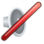
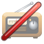
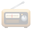
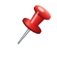
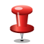
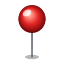
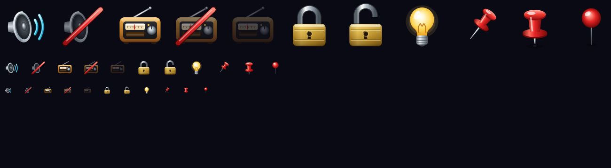

Chosen 2026-10-06: choice A. Choice B is kept here only as the comparison JJ saw; its file is not shipped.
The pin button on a floating meter or applet container ("Pin on top") uses the 📌 and 📍 emoji today, which don't render on Linux. These are drawn in the same Mac emoji style as the approved set: a glossy red pushpin with a chrome needle. Each card shows ours on the left and today's emoji on the right, then both at the button's real size (16 px).

📌
📍
📍


Choice A
Choice B
96 px, then 32 px (a retina 16 px button), then 16 px. Qt draws them the same on Mac, Windows and Linux.
